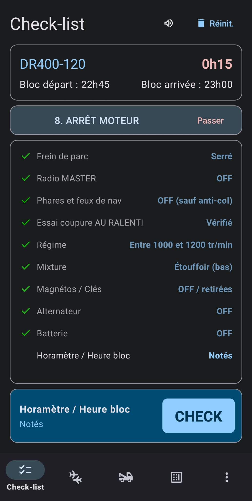
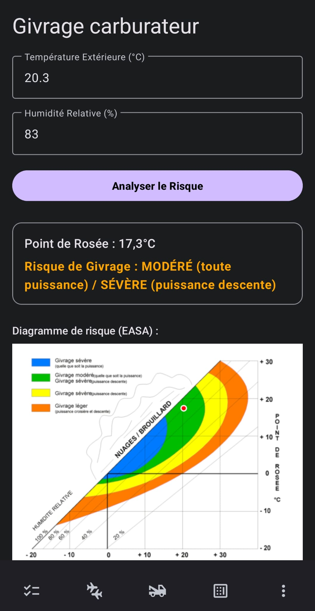

Aéroclub
Le couteau Suisse du pilote d'aéroclub et un mémo pour le pilotage VFR.
Description
Plus qu'une application, Aéroclub est le compagnon quotidien du pilote privé. Véritable boîte à outils numérique, elle regroupe tous les mémos et utilitaires nécessaires pour préparer et réaliser vos vols en toute sérénité.
Fonctionnalités Clés
Checklist électronique
Checklist séquentielle et vocale (pour ceux qui ont un casque bluetooth). Possibilité d'éditer, modifier ou ajouter une checklist.
Radar : avions équipés d'ADS-B
Affichage sur une carte des avions équipés d'ADS-B (affichage d'ADS-B Exchange).
Vent et givrage
Affiche le vent et la météo sur n'importe quel aérodrome, calcule le vent de travers et le vent effectif. Représentation graphique du risque de givrage (courbes EASA).
Outil de Conversion
Convertissez instantanément les unités aéronautiques (Litres en Gallons, Pieds en Mètres, Noeuds en km/h).
Affichage des SUP AIP
Affichage de la carte avec les SUP AIP représentés.
Calculatrice de temps
Permet de faire les totaux de son carnet de vol. Fonctionne en heures:minutes ou en heures,centièmes.
Tout en un clic
Ne cherchez plus vos notes, tout est regroupé dans l'application Aéroclub.
Google Play Liste des Checklists disponibles
